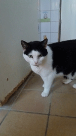
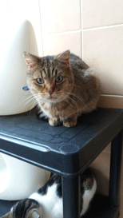
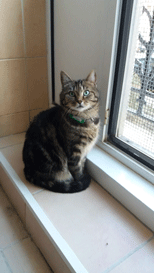
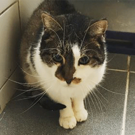
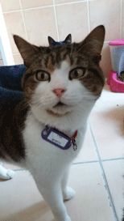
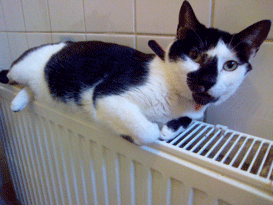

Nos mâles
Kalou
Je suis un beau grand mâle de 7 ans environ, trouvé en rue, on m'emmena au fanal en novembre 2014. Je ne suis pas dominant et je m'entend avec tous mes congénères, j'adore me balader en hauteur et je viens me frotter contre vos jambes. J'aime circuler dans l'immeuble et me dorer au soleil près des fenêtres. Le temps pas qu'il me paraisse si long, je suis très bien ici, mais j'aimerais une famille à moi, venez me rencontrer.

Calvin
Aussi incompréhensible que cela soit, Calvin est chez nous depuis déjà 5 ans, il a +- 13 ans, il sait se faire entendre et miaule volontiers pour attirer l'attention, c'est un bon mâle très câlin et s'entend avec tout congénère sans problème, il adore suivre les humains et se montrer très curieux et encore très jouette. Lui donneriez vous une chance d'avoir un foyer qu'à lui et vous combler de bonheur?
Tarsin
beau mâle tigré gris de +- 3 ans, arrivé chez nous il y a déjà 2 ans après avoir été trouvé en rue; Ce lui fut extrêmement dur de faire confiance aux humains, toujours à fuir face à toute tentative d'approche, il se réfugiait partout ... Il a appris très progressivement à ne plus avoir peur de nous mais il faut y aller en douceur et respecter quand il n'a pas envie ...Il n'aime pas être pris dans les bras il s'entend très facilement avec tout chat, pas dominant pour un sou malgré son bon poids .. Il aime paresser près des fenêtres. venez donc le rencontrer.
Spady
né aux alentours de 2008 il a donc une dizaine d'années. il nous est arrivé en novembre 2014. Il fut trouvé errant en rue à une période plutôt froide et fut apporté au fanal par de bonnes personnes.Nous ne savons donc rien sur sa vie d'avant. Il se méfiait fortement des humains et fuyait en notre présence, pas moyen de l'approcher. C'est un chat qui est resté très longtemps discret et ne vient pas spontanément chercher des câlins. il faut aller vers lui doucement, il se laisse caresser. Il s'entend avec ses congénères, on le trouve souvent près des fenêtres, C'est un chat doux et calme.
Spirou
trouvé en rue, il arrivé au fanal il y a un peu plus de 2ans, il semble avoir 3 ans, c'est un mâle tout doux de caractère et de pelage, il s'entend avec tout le monde : chats et humains, Il adore paresser près de fenêtres et s'étirer comme un minou digne de ce nom. Il est affectueux et n'attend que vous.
Aldo
Je m'appelle Aldo pour ces dames, j'ai 6 ans, on me trouva en rue et je suis arrivé au fanal il y a plus de 2 ans ... je ne pose aucun souci avec mes potes ici, je suis discret et bien câlin. Je suis très bien ici mais j'aimerais un foyer à moi je vous attends.